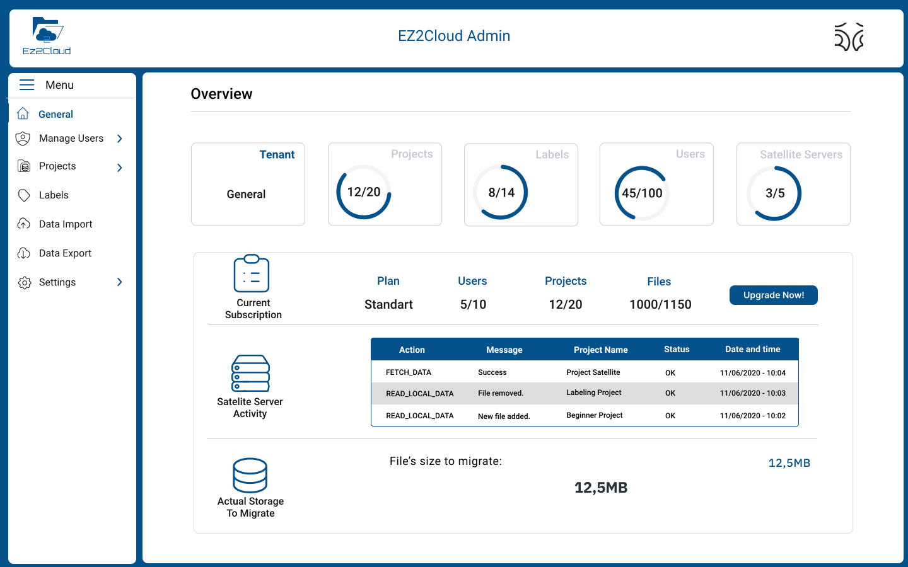

Project Administrator Role
Users with project administrator role will have access to functionalities that are for common user plus specifics funcionliaties of this role. By default a user in this role after successfull login will be presented the EZ2Cloud Dashboard as in the follwing image:

Functionalities in this Role
Specific of this roles are all functionalities to manage projects. Capabilities to define all the settings and provide projects to the colaborative working is the main goal. After click on the menu Project users will view Projects overview with a summary of all projects available as the following image shows:

New Project
To create a new project, click on the create project button  and a modal Window will be presetend as the following image.
and a modal Window will be presetend as the following image.  On this form the user must fill all the required data to create an EZ2Cloud project namely:
On this form the user must fill all the required data to create an EZ2Cloud project namely:
- Project Name - Identification of a project within a Tenant. This identification must be a valid alphanumeric character string without special characters like punctuation marks. Also the identification must be Unique.
- Description - Text with a maximum of 254 characters with a brief description of the Project.
- Local Network Path - Every EZ2Cloud project must have a mandatory binded shared network folder. This is the shared network managed by the company and whose content will be used to obtain the metadata from which the file and folder structure for the project is created.
- Internal Username - Username to be used, if the shared network folder needs credentials to authenticate like a specific user account.
- Internal Password - Password to be used, if the shared network folder needs credentials to authenticate like a specific user account.
- End Date - As a working unit the project should be in active state for a limited periodo of time. The start data will be the date it is created and end date can be filled on this field by the user with any valid date.
- End Alert Date - The Project Unit has an alert that is triggered by how many days are left until the end of the project. This alert is configurable by assigning in this field the number that represents how many days from the end date it should start receiving notifications.
- Assign Sattelite Server - Set the sattelite server that will be responsible to collecting and sending the metadata to EZ2Cloud.
- Assigned Labels - The collection of Semantic Label that can be used on the File Explorer.
- Assigned Users - Which user will be working on this project and also the users that can be used on performing ownership labelling.
Configure Project Tags
Configure Projets Tags is the definition of creating the collection of Semantic and Ownership Labels will be provided to the user on the File Explorer to perform labelling taks.
Assigned Labels
To create the Semnantic Label collection you must first have create Labels for your Tenant. Assigned Labels represents the collection. For a new Project you must create the Assigned label as follow: first click the button  and the New Project modal Window will be extended and it will be add the view as the following image.
and the New Project modal Window will be extended and it will be add the view as the following image. 
On this left, a list of all Semantic Label as defined for the Tenant. On the right side, the selected Semantic Label that will be available on the Collaborative working area or File Explorer. To move a label from one side to another please use the Arrows.
Assigned Users
To create the Ownership Label collection you must first have create Users for your Tenant. For a new Project you must create Assigned Users by first click the button  and a modal Window will be presetend as the following image.
and a modal Window will be presetend as the following image.  On this left, a list of all Ownership Labels as defined for the Tenant. On the right side, the selected Ownership Label that will be available on the Collaborative working area or File Explorer. To move a label from one side to another please use the Arrows.
On this left, a list of all Ownership Labels as defined for the Tenant. On the right side, the selected Ownership Label that will be available on the Collaborative working area or File Explorer. To move a label from one side to another please use the Arrows.
Edit one Project
The user can edit some of the data elements that define an EZ2Cloud either by double click in a line of the projects overview table or by select a project in the check box at the beginig of the line and then click on button  .
This will present the Edit Project modal window loaded with the project data in the fields as shown in the follwing image
.
This will present the Edit Project modal window loaded with the project data in the fields as shown in the follwing image

Edit multiple Projects
After click on the check-box in a line of project overview table the user is selecting a project. The user can select multiple line or projects and then click button .
This will present the Edit Project modal window loaded with the project data of all the projects that was selected as shown in the follwing image

Archive one Project
Projects that are no longer active must be archived. This means that they will be no more be visible on the main window of the File Explorer unless the user explicit click on the tab to view projects with status Archived.
To archive one project, select the project and click on the button  . First you will see the follwing dialog window asking to confirm that you want to archive the project.
. First you will see the follwing dialog window asking to confirm that you want to archive the project.  Click button Archive to confirm or Cancel
Click button Archive to confirm or Cancel
Archive multiple Projects
Projects that are no longer active must be archived. This means that they will be no more be visible on the main window of the File Explorer unless the user explicit click on the tab to view projects with status Archived.
To archive multiple projects, select all the projects you want to archive and click on the button . First you will see the follwing dialog window asking to confirm that you want to archive the project.  Click button Archive to confirm or Cancel
Click button Archive to confirm or Cancel